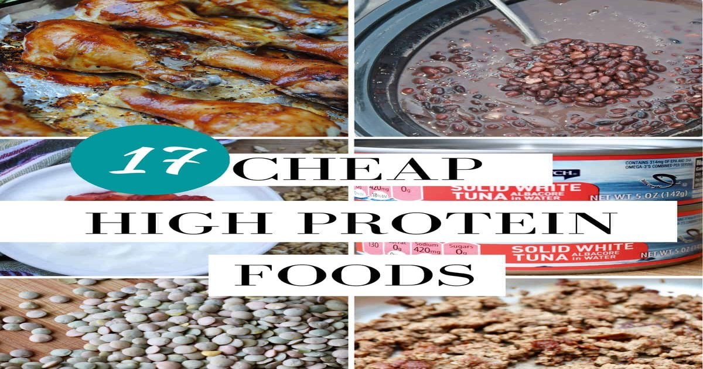

You don't need grass-fed beef and wild salmon to hit your protein goals. You don't need expensive protein powders or boutique supplements. You need cheap, effective, accessible protein. The Protein Intake Calculator can tell you how much you need. But you need to afford it.Protein Intake Calculator
Enter your weight, activity level, and goal — get your daily protein target in grams per pound and grams per kilogram.
All data stays in your browser — we never see it.
Protein Source Comparator
Compare cost per gram, leucine content, PDCAAS score, and digestibility across protein sources.
All data stays in your browser — we never see it.
Macro Split Planner
Enter your calorie target and protein percentage — get a daily macro split with meal-by-meal recommendations.
All data stays in your browser — we never see it.
Meal Protein Tracker
Log your daily meals and see protein per meal — get instant feedback on your distribution.
All data stays in your browser — we never see it.